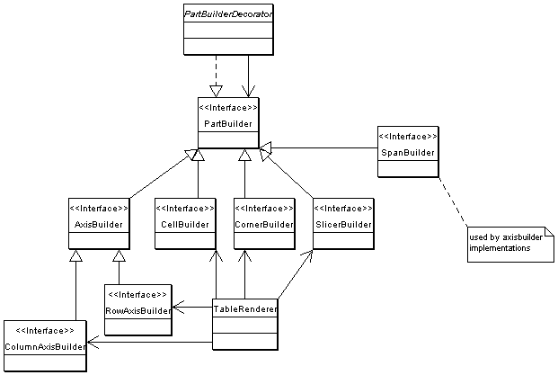

The TableComponent is extended thru TableComponentExtensions. The plain table component w/o extensions paints the table w/o any navigations. The extensions add UI elements like expand / collapse buttons and RequestListeners to respond on user actions.
An extension is initialized once when the compnent is created. During initialization it may register decorators with the renderer and/or RequestListeners with the table component. The extensions are listed in confix.xml

Example Extension:
public class MyTableExtension extends TableComponentExtensionSupport {
public static final String ID = "myextension";
public String getId() {
return ID;
}
public void initialize(RequestContext context, TableComponent table) throws Exception {
super.initialize(context, table);
MyCellBuilderDecorator cbd = new MyCellBuilderDecorator(table.getCellBuilder());
table.setCellBuilder(cbd);
}
...
}
The ID is used to access the extension from JSP pages via JSTL Expression Language.
Example of a CellBuilderDecorator:
public class MyCellBuilderDecorator extends CellBuilderDecorator {
public MyCellBuilderDecorator(CellBuilder delegate) {
super(delegate);
}
public Element build(Cell cell, boolean even) {
Element el = super.build(cell, even);
// add your attributes or children here
return el;
}
public void startBuild(RequestContext context) {
super.startBuild(context);
// initialisation stuff goes here
}
public void stopBuild() {
// clean up stuff goes here
super.stopBuild();
}
}
Example registering the extension with the table component in config.xml:
<table class="com.tonbeller.jpivot.table.TableComponent"> <cellBuilder class="com.tonbeller.jpivot.table.CellBuilderImpl"/> ... <extension class="my.package.MyTableExtension"/> </table>